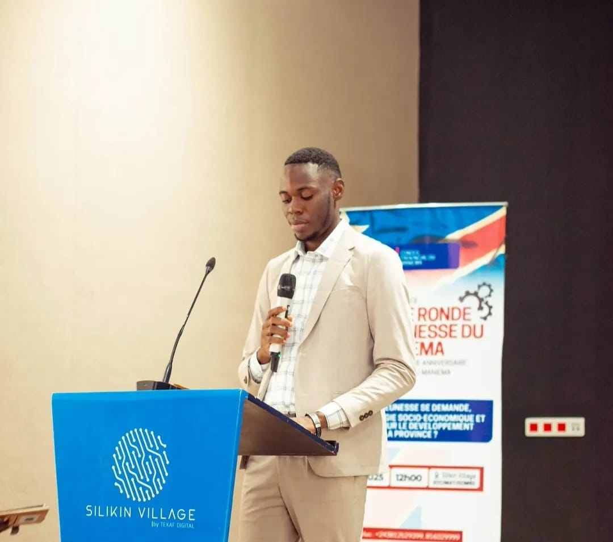

assets/images/profil-cherif.jpgQui est Chérif Mwaku Mufinda ?
Chérif Mwaku Mufinda est né le 2 mars 2001 à Kindu, dans la province du Maniema, en République démocratique du Congo.
Il est juriste, acteur de jeunesse et promoteur culturel congolais. Son parcours s'inscrit à la croisée du droit, de l'engagement citoyen, de l'éducation et de la promotion de la culture.
Formé en droit privé et judiciaire à l'Université de Kindu, il y obtient son Graduat en 2021, puis sa Licence en 2023.
Depuis mai 2021, il exerce les fonctions de Directeur des Projets du Collectif Maniem S'enflamme en Slam, une structure culturelle basée à Kindu.
À ce titre, il contribue à la conception et à la mise en œuvre de projets consacrés à la promotion du slam, de la poésie et de l'expression artistique auprès des jeunes.
Son engagement dans la représentation de la jeunesse est consacré le 19 janvier 2025 par son élection à la Vice-présidence du Conseil provincial de la jeunesse du Maniema.
Son parcours culturel est notamment marqué par sa victoire au Concours provincial de slam du Maniema en 2022.
En 2025, il organise le premier concours de slam interuniversitaire de la ville de Kindu, qui mobilise plus de 1 000 jeunes autour de la parole engagée.
À travers ses responsabilités institutionnelles, ses initiatives culturelles et son engagement éducatif, Chérif Mwaku Mufinda poursuit un parcours consacré à la participation citoyenne, à la promotion de la culture et à la contribution de la jeunesse au développement de la République démocratique du Congo.
L'essentiel
Naissance
2 mars 2001, à Kindu (Maniema, RDC).
Formation
Graduat (2021) et Licence (2023) en droit privé et judiciaire, Université de Kindu.
Fonctions
Vice-président du Conseil provincial de la jeunesse du Maniema ; Directeur des Projets du Collectif Maniem S'enflamme en Slam.
Ensemble, valorisons le potentiel de la jeunesse.
La jeunesse représente une force essentielle pour construire une société plus responsable, créative et engagée.
Entrer en contact